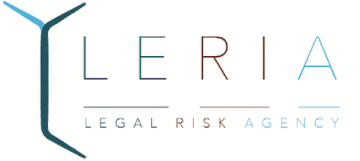

Avant d'avoir rejoins le projet, la conception du logo avait été lancé et j'ai pu le découvrir avec elle et découvrir en même temps les codes que j'allais derrière appliquer au site.
les
Wireframes
Après avoir échangé avec l’équipe pour un peu plus comprendre leur coeur de métier et comprendre ce qu’elle voulait présenter à leur client, j’ai pu commencer à travailler de mon côté. Ce site à pour but d’être un site vitrine et qui sera le support du lancement de LERIA. En effet, les filles de l’équipe ont déjà leur propre réputation/client sur le marché des risques légaux.

la
galerie
le
site
Pour ce projet, j’ai du mettre les mains dans le
cambouis et réaliser
le site sur Wordpress. J’ai décidé de partir avec une base et de trouver un template
compatible avec Wordpress. Avec les caractéristiques discutées avant et les wireframes et
contenus validé j’ai pu me mettre à chercher le template idéal.


la
conclusion
Ce projet à été l’un des plus facile à
réaliser.